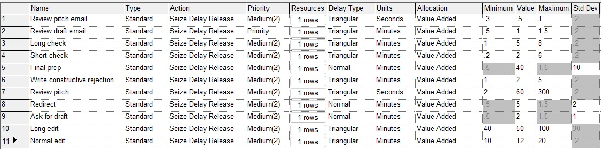

Media company: Simulation
A project that modeled complex editorial processes using random variables in Arena.
Problem. An online publisher has a guest writer program, which involves a complex editorial review process and takes a lot of editorial time to manage. One editor was running the program part-time, handling hundreds of emails and submissions sent to the guest-post inbox each week. The company hoped to scale up this program and wanted to know if hiring an additional full-time editor would result in enough extra content to make the investment worthwhile.
Since the existing editor was already handling all unsolicited mail coming to the inbox, the new editor's role would be different: They would need to actively solicit new content. This would be a more time-consuming means of sourcing content, so the concern was that the editor's time cost might outweigh the value they would be able to generate.
Data modeling approach. I chose to answer the question through a simulation in Arena. Specifically, I built 2 models:
- A model of the existing editorial workflow, which I adjusted until it represented the actual productivity and work times of the existing editor. This would provide some ground truth on the timing of various editorial processes.
- A model of the proposed new workflow for the additional editor. The distributions and parameters used in this model leveraged the learnings from the first model to predict the number of articles the new editor would likely be able to generate per week.
I used 8 weeks of prior data on submissions and published stories — in addition to my own familiarity with the process — to generate the random variables.
Modeling arrivals. I expected to model email arrivals with a Poisson distribution. However, this presented an issue. In real life, emails arrive at all hours of the day and night, so there's a large backlog when an editor checks in for work. Modeling email arrivals as Poisson thus resulted in Arena errors (too many entities in the system). So I opted for a constant arrival time to control those errors. I scheduled them to arrive as quickly as possible (to simulate a full inbox ahead of a day’s work) without clogging the system. (I limited the total volume to the average daily email counts reflected in the data.)
Modeling processing times: Since editorial processing times vary greatly depending on the article idea, author, and other factors, I relied heavily on Triangular distributions for many of the subprocesses of the workflow. This allowed me to set realistic lower and upper bounds (such as a 0.3-second decision time on whether to open or ignore an email, for example) and allowed me to avoid negative values. I also used Normal distributions for a couple of subprocesses that showed less wild variation &mdash for example, a "final prep" subprocess that is theoretically the same for every story published so has a clear average time but that, in practice, varies a bit due to a number of factors (eg, how long it takes to finalize the headline, tags, and image, etc.).
Results. The simulation estimated that, if the company hired the new editor, they would be able to produce 10.4 stories a week, 24% more output than the existing editor was producing (the equivalent of 8.4 stories per full-time week), assuming an equivalent skill level and work pace. This outcome gave the executive team confidence that a new hire would indeed be a tenable move.
The 3-minute video below provides a quick overview of the two models: